ProjectNight.com
Wednesday Night Project Night, Page 10
Most recent night first.
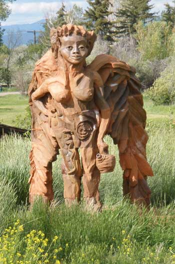
Mid 2011 The ProjectNight.com traveling Project Analysis Team, assigned, with no funding and scant few cigars, to find and identify significant obscure projects, was traveling in Montana, out in the brush just west of Helena Montana. Is this not a cool project, or what? It is "the Angel".
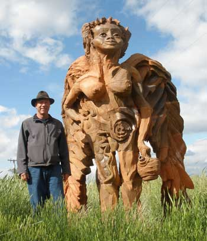
And that is David Porter with his angel, one of his pottery projects, made and displayed at "The Bray".
The Bray, at Helena Montana, is a world known pottery institute for people who are either well known in the international pottery circles, or training to become well known. Some innovative pottery is done at the Bray. The facility was previously a major brick making factory, that encountered the declining demand for traditional bricks. Trees started growing among and through the cluster of large dome shaped kilns, until Mr. Bray and some other modern pottery folks recognized it as a superlative opportunity for a pottery institute. It is a good shop for Project Night, among the pottery folks.
The Angel was made several years ago. The prestigious ProjectNight.com traveling Project Analysis Team was able to get David to travel from his current Hood River Oregon studio for a photo and discussion of pottery projects.
If you are in Hood River Oregon or that part of the world not far from Portland, and you appreciate pottery art, large or small, chase down David Porter, and accept no excuses for his attempt to avoid the pottery project of your preference.
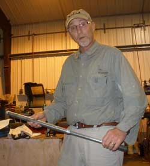
17 July 2011: Jon's shop
The Professor of Repairing Telescoping Rods gave a lecture on repairing telescoping rods. That is the telescoping rod he used for his demonstration repair. Not an easy technique, since telescoping rods fit snugly, and require remarkably good luck to repair after carelessly bending them.
The "Door Knocker", by a well known local artist, is a "why didn't I think of that" project, using a split ball mill ball.
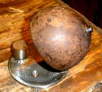
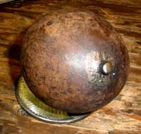
Well, Fairbanks Alaska was a gold mining community before the government got billions of oil dollars to hire legions of bureaucrats and cops to plunge the society into non-productivity for the insatiable quest of yet more stolen money (taxation), instead of producing useful things. So there are a lot of old steel balls around, used in ball mills to crush the gold ore so the gold can be more readily washed out of the rocks. And there are a lot of people always trying to figure out what to do with all the old ball mill balls. Door knockers may be the answer and the future economy of Fairbanks if we can just rid the country of the government vermin who keep stealing everybody's money that could be used to buy door knockers.
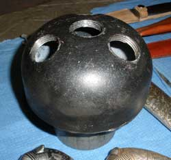
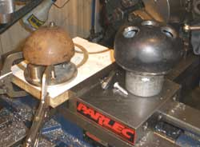
And the floating island fountain nozzle head was completed for the new BioHaven floating island scheduled to be made for BuchananLake.com at Yakima Washington later this year if it gets done later this year. Well, the lake manager was managing the lake this spring, and he noticed the fountain in the little City Park pond north of the lake, and the fountain in the little pond at the Yakima Arboretum south of the lake. Harrumph. The little ponds upstaged the big pond. Who do you call? ProjectNight.com of course. Weld a pipe bell cap onto a threaded pipe sleeve, and tap it for some brass hose bars (completed project photo later), and get it to the lake for the pipe between the pump and the nozzle head. ProjectNight.com is internationally known for its timely response to critical projects, including the unstaging of upstaging, or something like that.
ProjectNight.com was honored with an internationally known Sikh knife maker who presented a variety of knives, and gave a lecture on their construction, history, and a some stories. A few other knives and a sword showed up for the scheduled lecture. The Thai sword was made by the Thai king's sword maker. The knives with the large sheaths are Turkish.
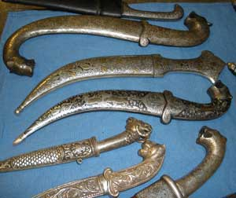
The Sikh blades are magnificent Damascus steel, sometimes with gold or silver inlay. The sheaths are usually silver and / or gold inlay in black iron. The handles can be a variety of materials. And this information was written after the writer misplaced his lecture notes, so the rhetorical accuracy may not be precise. These knives are of the highest quality, and superlative display items. Everyone who appreciates displaying high quality, interesting art would want one for the conversation value and occasional self defense or skinning moose. If you want one, contact the web slave. He will put you in contact with the knife maker, who has moved to Alaska. If you pull out one of these knives next time you shoot a moose, your hunting partner will be impressed.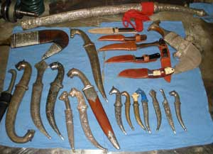
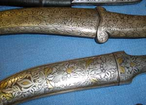
Sikh knives are associated with Sikh self defense techniques which are state-of-the-art. The ProjectNight colleagues were given an introduction to Sikh knife defense.
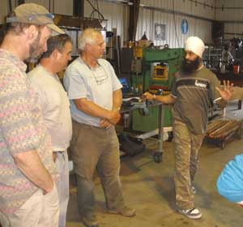
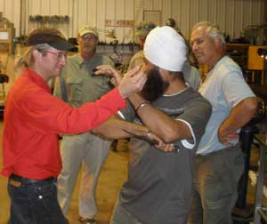
While Americans generally tend to openly brandish their knives in a fight, conforming to the American Rambo tough guy image threatening everybody, Sikh techniques involve the primary use of the mind to preclude the use of violence, by discussing one's differences in a non-threatening manner, with the knife not in noticeable sight or not threatening, but instantly ready.
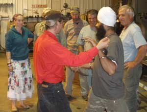
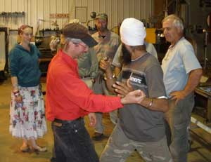
If you see the knife in his hand, you already made the fatal mistake of directly threatening the life of person handling it.
The techniques include what to do if the other person has the knife or sword, and all you have is a towel, or anything else at hand.
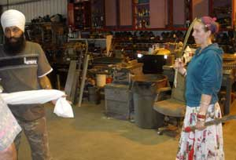
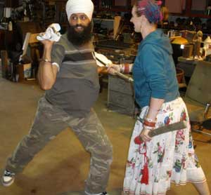
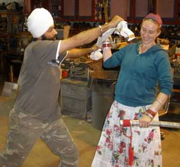
The web slave writing these words, having learned one of the more immediately deadly forms of unarmed self defense, among many, notes that the difference between walking victims and people who do not exhibit that common trait, is TRAINING and PRACTICE. The mind must learn the techniques of any particular form of self defense, and then PRACTICE them to the extent of their becoming instantaneous or "sub-conscious" upon recognition of a genuine threat. That includes the use of a 44 magnum for armed self defense. When seconds count, the cops are only minutes away, and incessantly lie about their utility to society. They only carry guns to protect themselves, not you. Most people carrying a gun are your friend, except cops who crave arrests and taxation by fraudulent citation, for budget excuses. A knife and knowledge are good for all the other times.
And ProjectNight.com is the source of all knowledge, of course, or something like that.
29 September 2010: Tim's Shop
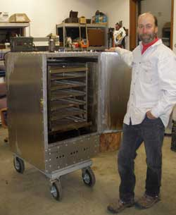
Alright, we actually got four projects well advanced, plus another project that was finished earlier, for which we are taking credit because we got the photos.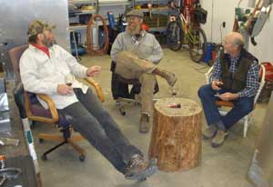
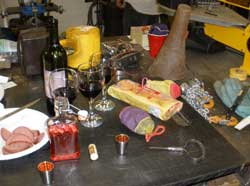
That is the new meat and vegetable smoker with the ammo can control box on top, that replaces the shingle sided smoker that went up in smoke. Another ProjectNight masterpiece that got finished (because it was not done on ProjectNight).
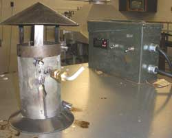
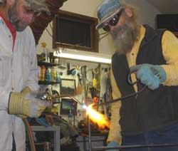
In between the advancement of the Mountain Fire Dragon Pit Swing-over Grill Frame that was previously a clothes drying rack found in the dumpster, being cut, torched and hammered in the photos, and the cutting torch re-edging of the Number 9 rock shovel that was found in a dumpster, we laughed at the ongoing plunge in the value of the US paper dollars (Federal Reserve Notes) that the DemocanRepublicrat War and Police Regime is printing as fast as they can slash the forests to make the pulp, in their effort to print their way out of the problem they printed themselves into. Just as well laugh because the American voters already voted for the DemocanRepublicrats who already gave the ownership of the people's money to the private Federal Reserve Bankster families who have been printing themselves trillions of Federal Reserve Notes that have heretofore fooled the world into believing that the US paper scrip held some value beyond the paper.We could have just made a heavy expanded steel grate for the Mountain Fire Pit barbecue grate, by we found the clothes drying rack, so it will be the frame for the grate. We can dry our clothes by wearing them, especially next to the fire.
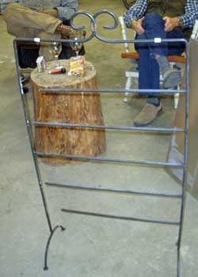
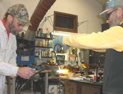
The world is belatedly figuring out that the US dollars they saved have suddenly been printed into worthlessness, and they are pissed. The value of silver, gold, copper and other metals is NOT going up. The value of those over-printed worthless paper US Federal Reserve Notes is going DOWN. Expect zero.Is it not interesting that 5 of the 5 (owner) governors of the Federal Reserve Bank, printing those Federal Reserve Notes (YOUR money), are all of one small minority religion in the US (less than 2 percent). How do you suppose that happened, and how much (easily printed) money is required to buy and completely own a DemocanRepublicrat in Congress? By chance that same religion has decreed that Israel is a Single Religion State, with only members of that religion granted full citizen rights, the absolute opposite of everything that the US represents and everything that US soldiers sacrificed for in many wars. Imagine how loudly the hypocrite Americans would scream if the government of a predominantly Muslim nation decreed that only Muslims would be granted full citizen rights. Except for the tiny little Vatican, Israel is the only formally declared single religion nation in the world, therefore a self-decreed throw-back of civilized society. And Israel is using its military and goon squads to bulldoze the homes of people of other religions, who have owned and lived on their land for generations, and killing anyone who objects, including driving a bulldozer over a US citizen, killing her, who was part of a peaceful protest group. And 300 of the 365 US War and Police Regime Congressmen signed a letter saying the US would defend Israel against ANYONE, such as the entire world, including the oil producing countries when their citizens get sufficiently enraged at the over-printing, to zero value, of the US dollars they foolishly worked to get and save. Do not expect to be able to buy oil (gasoline) with US paper money, from the Muslim oil producing nations soon.
Remember, all tools were originally made from the use of a hammer, not oil. So with a hammer and your garden, you can keep living a good life, albeit cold and in the dark. But with good wine, the sun shines through the dreariest moments. Grow grapes.
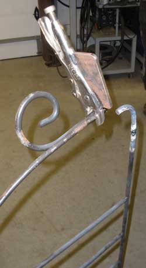
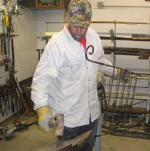
Of course that Military Regime (US / Israel) is inherently doomed. When the members of the American majority religions and the non-religious (98 percent of Americans) belatedly recognize that it was their sweat that gave value to the Federal Reserve Notes that were over-printed to fund the arrogant Israeli Religious Goon and War Machine, a religion that holds Christians and all other religions in contempt, openly stating that they will go to hell because they are not "God's chosen Jews", the Americans may ship those 300 congressmen and the entire 10 square miles of Washington DC to Israel, and make a new currency backed by metals that require real work and thus real value to scrape out of the ground.Interesting times.
That is when we at ProjectNight.com, along with other Alaskan shop workers, will be hammering the local gold into identified weight and purity trade units (currency) for people to use as a medium of exchange for all the fine products we have already made from dumpster finds.
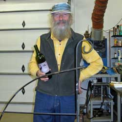
The local crabapple liquor brought to tonight's ProjectNight, the red stuff in that bottle on the shop table in the photo, was worth more than gold. Grow crabapples.
That is an another bottle of Tefft Cellars wine that contributed to the advancement of the Alaskan shop industry.
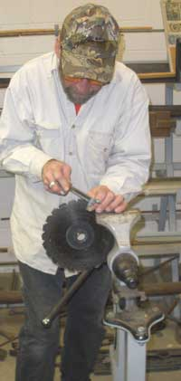
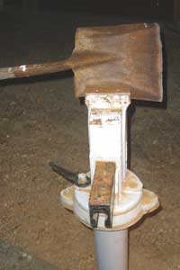
A little sharpening action on the brush whacking blade.
And some chap threw away a perfectly good Number 9 rock shovel just because it had a rip in the steel at the edge. A little torching action to cut an inch off the end restored the shovel to a perfectly good tool to lean against the shed back wall until it finally rusts into the ground.
Well, a rock shovel is not that good for digging soil. And too small for a snow shovel. And way too small for what politicians produce that constantly needs shoveling away to avoid stepping in it.
And there we jolly well have it.
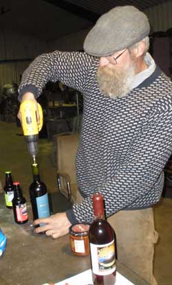
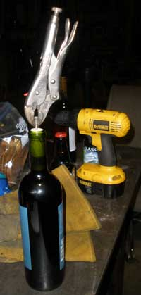
22 September 2010: Jon's Shop
The every Wednesday night Project Night, when at Jon's shop, follows the every Wednesday night beer night at Jon's elevated fire pit by Goldstream Creek. That group is the beer brewing group, and there are a few of the same folks in the two groups, especially for the primary purpose of both events.
The mead and wine were magnificent, except for the mead. There was some difficulty with the corks. Jon's Shop has some high tech machining equipment, but no cork screw. Well, when you are accustomed to just shooting the top off the beer, wine and whiskey bottles, right there in the shop, and you don't have enough ear plugs for guests, you must innovate. The total number of wine corks removed with sheet rock screws and vice grips may outnumber the ones removed with 44 caliber bullets, outside of Alaska.
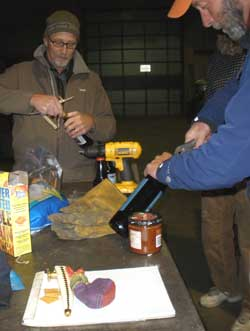
There was a discussion of Sarah Palin. The masses are easily fooled with pretty lips for the same old DemocanRepublicrat lies. But then the masses are easily fooled by the most ancient political lies regardless of the source, as proven by the existence of politicians. Sarah offers a few more laughs than the average dumb politician. Between dumb and dumber, dumber is more amusing. That is why Alaskans like Sarah, the only reason.
The featured project was that of turning the rectangular metal clothes drying rack found in the dumpsters, into a half circle Mountain Dragon Fire Pit swing-over grill frame. Actual construction, ah, er, destruction-phase work was completed. The rack was cut up with a bolt cutter. The bending and swearing part of the project was reserved for next project night, in keeping with productivity standards.
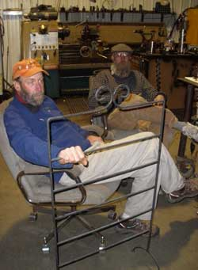
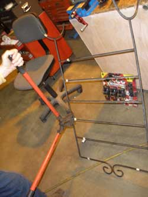
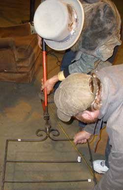
Then the expensive hand-held router with the busted aluminum frame casting, walked in the door. That required serious homdihooming and wrench torquing that resulted in a consensus that an expensive new hand-held router would be put on the shop tool buying list for the following day for the project that was due the following day. Well, some things get more busted during repairs. That is a requirement of the human condition, or a law of physics, or yin yang.
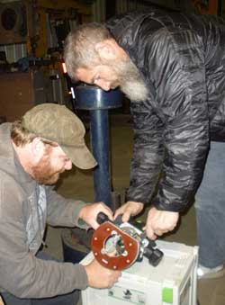
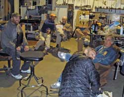
Next shop night at Tim's shop. Tim has a shop cork screw.
15 September 2010: Matt's Shop
The arrival of the Katalox wood kitchen cutting board project, an old stand-by among the perpetual projects, elicited a dissertation on the relative qualities of various woods, as usual for the academic sorts of Project Night. The computer was consulted, and a long discussion resulted regarding precise scientific species names associated with stress testing of woods to determine their strength as quantified by a particular term which the web slave would have used in this sentence if he had not been smoking so much tobacco leaf and wood dust while measuring the Katalox boards in metric.
Alaska yellow cedar rated very high in the qualities being discussed, so a piece of it was passed around for homdihooming and pontifications of approval.
A picture of the Katalox project was taken, to prove the traditional productivity of Project Night, and a discussion of motorcycles was initiated.
The wine was adequate.
Plans for the next floating island were discussed, with modifications changing the plans as fast as the ideas were floated. The guy with the camera was requested to take a picture of the plans to prove the existence of the project. The camera guy told the planner to make some plans. The planner assured the web slave that the plans would be produced as soon as they were made.
Comments were made about a certain timber frame project that was noticeably not advanced, beside the shop of the timber frame guy who was making timber frame structures for everybody except himself, as it is with these guys who turn their interests into economic survival. The ProjectNight productivity committee suggested that the project be worked-on more diligently so as to be ready when the Katalox kitchen cutting board was ready. The response: "Easy".
Next Project Night at Jon's shop. Bring a project.
More projects as more projects happen next project night, or might get reported, on occasion.
Page 9 February 09 --- November
09
Page 8 October 08 ---- January
09
Page 7 March 08 ------ October
08
Page 6 February 08 --- March 08
Page 5 December 07 -- February
08
Page 4 October 07 ---- December
07
Page 3 July 07 --------- October
07
Page 2 April 07 -------- June
07
Page 1 November 06 -- March 07